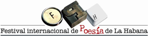

Tardes de Poesía en el Hurón Azul
dedicada al poeta y pedagogo Raúl Ferrer

Lunes de 20 junio de 2011 / 4:00 pm
Hurón Azul de la UNEAC / 17 y H, El Vedado
Programa
Canción Romance de la niña mala, texto de
Raúl Ferrer y música de Pedro Luís Ferrer
Palabras de Alex Pausides
Vicepresidente de la Asociación de Escritores
Coordinador General del Festival de Poesía
Emilio Comas
Semblanza de Raúl Ferrer
Lectura de poemas por
Andrés Bandera
Rolando Peña
Nevalis Quintana
Alfredo Ávila
Canciones
Raulito Ferrer Monte, Fósforo, letra de Raúl Ferrer, música de Rulito Ferrer Monte
Raquel Hernández, A Frank País, letra de Raúl Ferrer, música de Enriquito Núñez Rodríguez
Testimonios
Lourdes Teresita Ferrer
Controversia y elogio
Renito Fuentes
Lázaro González
Raúl Ferrer nació en Yaguajay, el 4 de mayo de 1915. Murió en La Habana, el 12 de enero de 1993. Poeta, creador y maestro revolucionario, en 1937, tras un cursillo de habilitación, se inició como Maestro Cívico Rural en la escuela primaria del central azucarero Narcisa, en Yaguajay. Se incorporó al partido marxista-leninista en 1940 y organizó, junto a Romárico Cordero, la Federación Nacional de Maestros Rurales.
En agosto de 1945 se realiza el Congreso Nacional de Unidad Magisterial, en el que surge el Colegio Nacional de Maestros de Cuba y resulta electo Secretario General. Cuatro años más tarde recibe el titulo de Maestro normal en la ciudad de Santa Clara.
En la Conferencia Mundial de Educadores realizada en Viena, en 1953, denunció el saqueo del presupuesto educacional en nuestro país. Ese año se trasladó a La Habana, y ganó un aula por oposición en Santos Suárez. Como miembro del Comité Socialista de Maestros desarrolla múltiples actividades y sufre la represión del BRAC y del SIM, órganos de la dictadura batistiana.
Al triunfo de la Revolución asume distintas responsabilidades, entre ellas, la de Vice-Coordinador de la Campaña Nacional de Alfabetización en 1961. Desde la dirección de la Educación de Adultos en el Ministerio de Educación dirigió las campañas de Seguimiento por el Sexto y Noveno Grados, Creó la obra de texto Vademécum, con las materias para concluir la enseñanza primaria en el plan de adultos. Fue Consejero Cultural de la Embajada cubana en la URSS y Coordinador Nacional del Programa de Lectura, desde 1984. Representó a Cuba y a la UNESCO en diversos eventos y tareas, principalmente sobre la alfabetización de adultos.
Dentro de su poesía se destaca el poema Romance de la niña mala. Sus principales obras: Viaje sin retorno, Décima y romance y El retorno del maestro, constituyen un patrimonio de las letras nacionales y un ejemplo de responsabilidad intelectual y honda cubanía.
Recibió reconocimiento por su obra literaria y su extensa hoja de servicios a la cultura y a la educación, por su permanente entusiasmo, combatividad y actividad creadora, y por la profunda huella y el respeto creciente que sienten quienes tuvieron la oportunidad de conocer su batallar constante como maestro y revolucionario.
De la Multimedia Maestros Inolvidables Siglo XX en Cuba. Asociación de Pedagogos de Cuba. Cuba en la AELAC. La Habana, 2009.
Regreso del Cucalambé
a Pepe Ramírez Cruz
Campo
Regresas, qué campechano,
al sitio campestre en flor
con tu laúd campeador
campesino como el guano.
Nuevo en el campo cubano,
y en sus campañas inquieto
campeando por tu respeto
acampas entre la piña
con cien años de campiña,
campeón del canto completo!
Agua
El lucero de tu yegua
brilla sobre la manigua
cuando tu figura antigua
se identifica a la legua.
Y aunque el fango no dio tregua
a tus mensajes de yagua
ya no vuela una tatagua
de la yagruma al caimito
y en el cristal del Cornito
nunca fue más limpia el agua!
Monte
Remontando el claro día
para desmontar más pronto
en el arco del tramonto
el sol de la tiranía
tramaste una montería.
Y montero de horizontes
tu montaña de sinsontes
-adivinanza montuna-
iba monteando a la luna
por la noche de los montes!
Punto
Cucalambé decimante,
decir de grande, cimero;
sobre el décimo sombrero
decimado de diamante.
El decimiel que te cante
tendrá que endecimecerte
con decimicuba fuerte
donde el punto se adecime
por la décima sublime
que decimonta tu muerte!
Con la cooperación de
Marlene Alfonso, Coordinadora del FIPH
Comité Provincial de la UNEAC de Artemisa
Maité Díaz, Secretaría Ejecutiva de la UNEAC
Enisyuria Concepción, María García, Asociación de Escritores
Centro Iberoamericano de la Décima y el verso improvisado
Asociación de Artistas Escénicos de la UNEAC
Luisa Campos, Museo de la Alfabetización
Teresita García, CREART
Idea original
Lourdes Teresita Ferrer y Alfredo Ávila
Dirección general
Alfredo Ávila
1 comentario
Dalia
16 junio, 2011, a las 14:39 (UTC -5) Enlace a este comentario
Es una alegría ver que en este homenaje se leerá la poesía del maestro y que no sólo se hará alusión a su labor de pedagogo y revolucionario. Es una pena sentir que Raúl Ferrer está olvidado como poeta, cuando se habla de su poesía el ejemplo es el Romance de la niña mala y escribió mucho más. Tiene poesía de amor sonetos maravillosos y una bella poesía para niños. Lo olvidan en las antologías, lo olvidaron en un libro con poesía y juegos para niños y adultos, donde colocaron hasta canciones de Silvio Rodríguez y ni una sola poesía de Raúl Ferrer. Doy las gracias e imagino que el poeta que fue, donde quiere esté ahora, sonreirá contento.